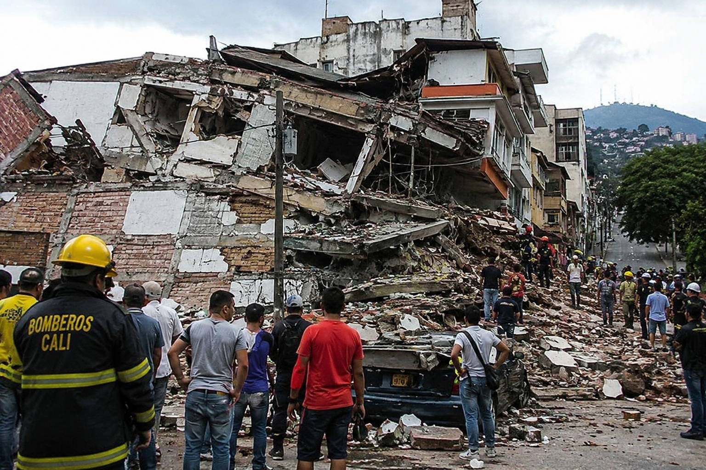

Powerful 7.4 Quake Rocks Colombia as Rescue Crews Search Collapsed Buildings
National | World
Published: Monday, August 10, 2026

A major earthquake struck western Colombia Monday, triggering building collapses, injuries and rescue operations as emergency crews searched for people who may be trapped beneath the rubble.
The 7.4-magnitude earthquake was centered in the municipality of San José del Palmar in the Chocó department, according to Colombian authorities. The strong shaking affected communities across the region, including Cali and Quibdó.
Officials in Chocó said significant structural damage had been reported in Quibdó, the department's capital. Gov. Nubia Carolina Córdoba-Curi said authorities were conducting an initial assessment to determine the extent of the destruction and identify areas requiring immediate assistance.
Cali also reported serious damage. Mayor Alejandro Eder said approximately 20 buildings had collapsed in the city, with some residents potentially trapped inside. Emergency personnel were deployed to the affected areas, where temporary tents were being established to support rescue and coordination efforts.
Colombia's newly sworn-in President Abelardo De La Espriella said the national government was taking an active role in managing the disaster response. He directed officials to create a Unified Command Post in San José del Palmar to coordinate emergency operations and provide assistance to residents affected by the quake.
Officials were still gathering information about the full scope of the damage and the number of people injured. At the time of the initial reports, authorities had not confirmed any fatalities.
The earthquake struck as the region continues to deal with the effects of previous seismic activity. Two powerful earthquakes measuring 7.2 and 7.5 struck Venezuela in June, causing extensive damage and a significant loss of life.
Colombian emergency agencies are continuing their assessment while search-and-rescue teams work through damaged areas and authorities determine where additional resources are needed.